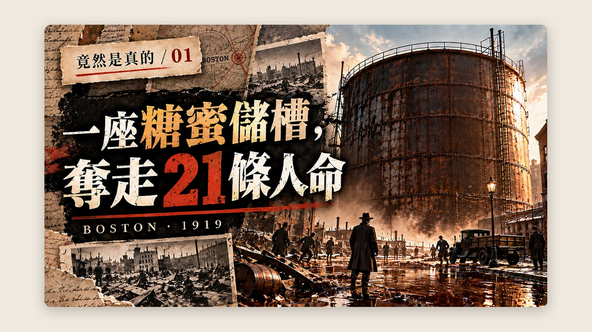
AI 影片｜YouTube《竟然是真的》EP01：1919 波士頓糖蜜洪災
以前做一支有故事性的影片，從資料、畫面到剪輯都要花很多時間。我用 AI 練習在短時間內完成：整理史料、用 AI 重現當時情境，再搭配剪輯與旁白。
2026/10/28 發布，一個人在短時間內完成整支影片，也開啟了《竟然是真的》系列。
觀看影片 →15 年以上行銷經驗，以數位行銷為主，近 10 年在 B2B 企業。我擅長的是在既有限制下找到可行的做法：從課程電商、轉版課程推廣、私域名單，到 Podcast、影片和 AI 工作流程，多半是從零開始摸索，再一步步做出成果。
每個案例都依「背景 → 我的做法 → 結果」整理。數字是當時情境下的結果，我更想分享的是怎麼判斷、怎麼做。點卡片看完整內容。
我不是專業剪輯師，這些影片從腳本、拍攝、剪輯到動畫，都是在工作中自己摸索完成的。挑了 9 支形式不同的作品：手機即拍即剪的直式短片、Podcast 影音版、專家知識短片、情境說明、課程推廣、產業趨勢月報、2D 動畫、復古遊戲動畫，到 AI 生成影片。
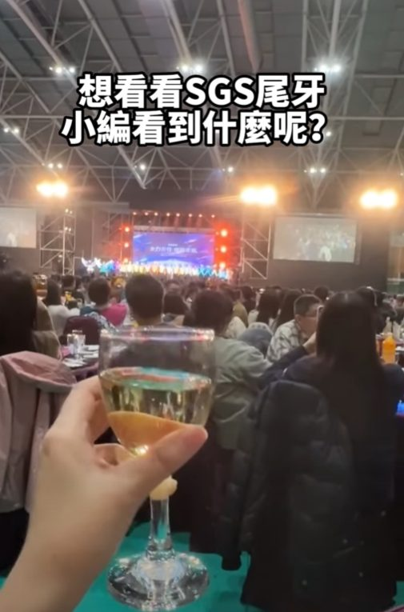
直式短影音用手機邊拍邊剪，活動當天就上線的現場紀錄。
手機拍攝・當場剪輯
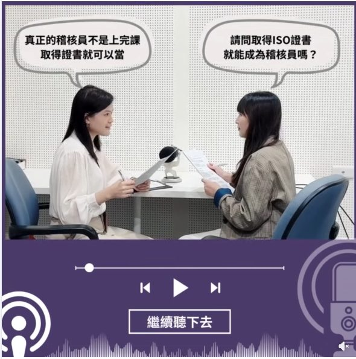
Podcast 影音版把 Podcast 對談剪成影音版，帶回節目收聽。
腳本・拍攝・剪輯
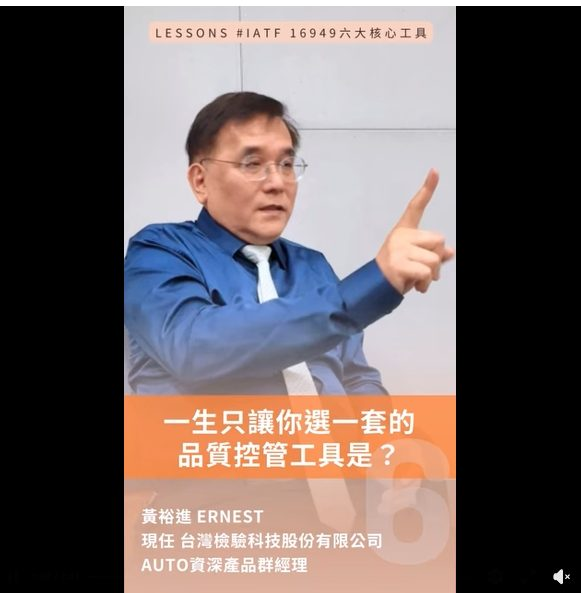
專家知識短片由汽車產品群經理入鏡講解，把產業標準濃縮成 3 分鐘。
腳本・拍攝・剪輯
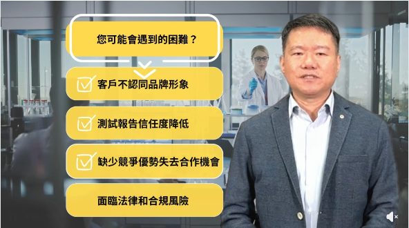
情境說明先點出實驗室的痛點，再帶出驗證服務。
腳本・拍攝・剪輯
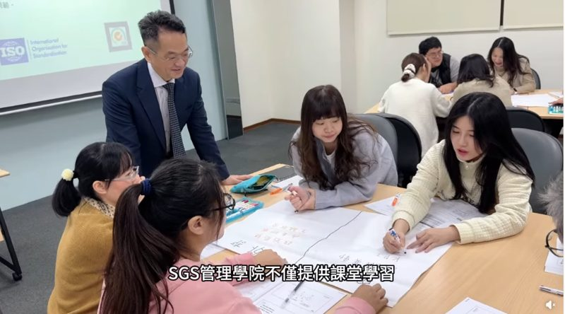
課程推廣用上課環境與學員畫面，推廣公開班三人同行優惠。
腳本・拍攝・剪輯
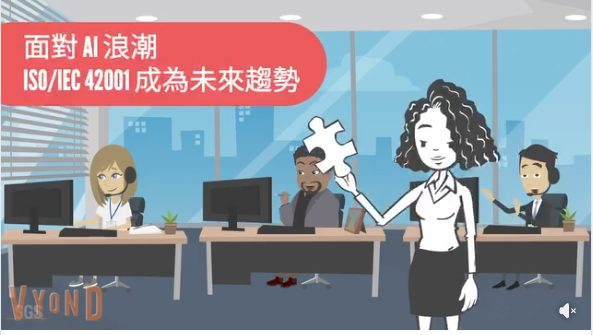
2D 動畫用動畫說明 ISO/IEC 42001 這類抽象主題。
腳本・動畫製作
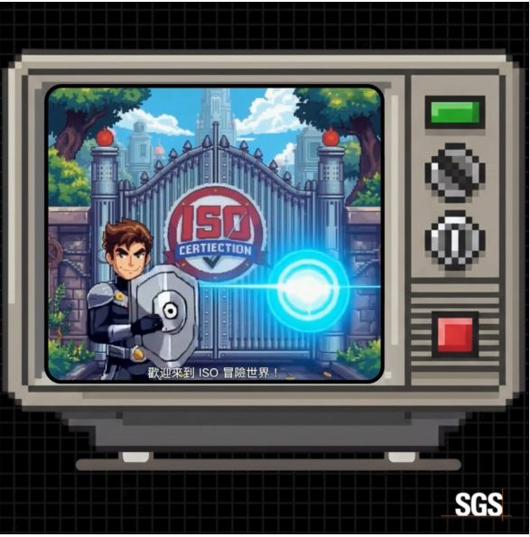
復古遊戲動畫用復古遊戲風格，把取得驗證的過程比喻成闖關，讓人用有趣的方式認識 ISO。
腳本・動畫製作
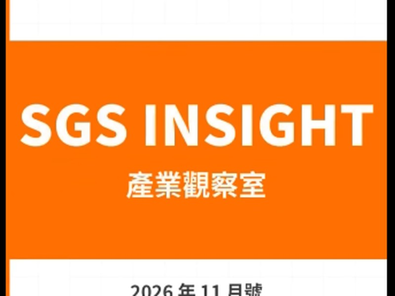
產業趨勢月報每月蒐集產業資料，用 AI 統整重點並製作畫面，再自己配音、剪輯成直式短片。
企劃・AI 製作・配音剪輯（威力導演）
用 AI 生成畫面，為平台新功能做一支有科技感的上線預告。
腳本・AI 生成・剪輯
工作之外，我用 AI 把生活裡的小問題做成工具和影片。這些作品都已上線，可以直接點開使用。

AI 影片｜YouTube以前做一支有故事性的影片，從資料、畫面到剪輯都要花很多時間。我用 AI 練習在短時間內完成：整理史料、用 AI 重現當時情境，再搭配剪輯與旁白。
2026/10/28 發布，一個人在短時間內完成整支影片，也開啟了《竟然是真的》系列。
觀看影片 →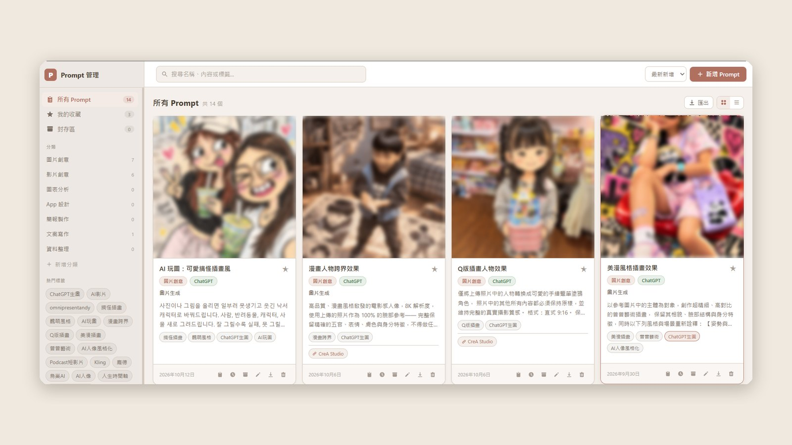
網頁工具｜Prompt 管理同時在 ChatGPT、Claude、Gemini 工作，好用的 Prompt 和流程容易散落各處。我自建一個 Prompt 管理工具，把跨平台的 AI 工作流程和靈感集中在一起。
已上線並實際用在日常工作，把個人的 AI 經驗變成可以重複使用的系統。
打開工具 →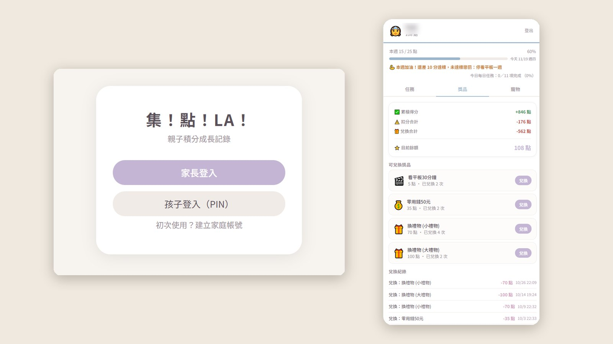
網頁 App｜親子任務積分紙本集點卡浪費紙，點數也很難累積、帶著走。我做了一個結合任務與動物養成的線上集點卡：家長自訂任務，有扣分與兌換獎勵機制，孩子完成任務就能讓電子寵物長大。
集點變得更方便、更有趣，孩子可以自己打分數、了解自己的狀況。任務、扣分、兌換的設計，和會員積分經營是同一套邏輯。
打開 App →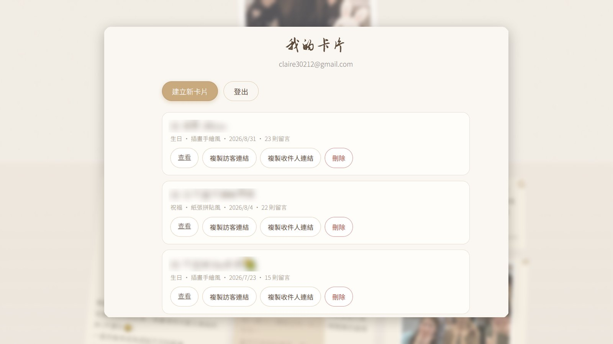
網頁 App｜多人電子賀卡大卡片要傳給很多人寫，常受時間和地點限制；線上卡片很快，卻少了手寫的溫度。我做了可以多人留言、拍照拼貼的線上卡片，再加上布置飾品與排版功能。
實際寄給多位朋友使用，有朋友主動建議可以上線販售。
打開卡片 →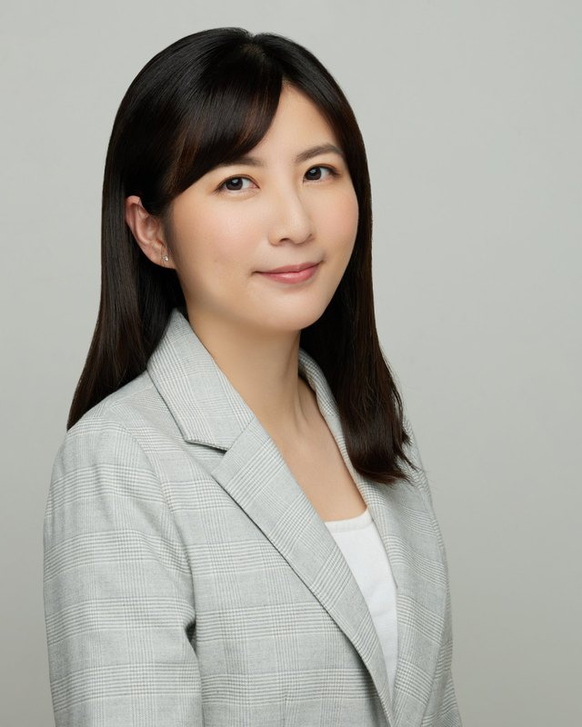
ABOUT · CLAIRE CHANG
B2B 數位行銷｜15 年以上行銷經驗
「把一件事從無到有做起來，
並看到它帶來實際成果。」
我的職涯從廣告代理商開始，親手操作過 100 多家客戶的 Google 廣告與 SEO，也在遊戲公司自操 FB 與 Google 廣告；之後轉到品牌端，負責和媒體代理商、SEO/GEO 廠商合作。因為自己做過，我能站在品牌方提出更好的方向，也看得懂代理商回饋的成效數據、快速配合調整，而不是被帶著走。品牌端的經驗，則讓我習慣從業績回推行銷該做什麼。
最有成就感的時刻，都是把一件事從無到有做起來：把免費學習平台變成付費課程電商、從零開一個 Podcast 頻道、把展覽現場的人潮變成可以重複觸及的名單。工作之外，我用 AI 做影片、寫自己的網頁工具，這些習慣也直接帶回工作上，縮短了簡報與內容製作的時間。
電商功能導入、檔期活動、優惠券導購
FB、LINE、電子報、Podcast，把活動人潮轉成私域名單
簡報與內容生產流程、AI 影片、自建網頁工具
前 6 年在 4 家公司打下數位行銷的實操底子，之後分別在建準和 SGS 待了 6 年與 4 年多，把這些能力整合起來，用在品牌經營和數位通路上。點選下方階段看細節
4 家公司，從實操累積完整的數位行銷底子
Google 廣告與 SEO 實操，操作 100 多家客戶帳戶
自操 FB 與 Google 廣告，開始規劃整體活動；粉絲團一年 0 → 35,000
通路行銷企劃：支援美國、澳洲、東南亞與台灣子公司的行銷與展覽（Computex 等），英文工作環境
和多家媒體代理商溝通，思考廣告創意與成效；FB 名單成本 555 → 192 元
平台原本只是學員的免費課前進修網站，營收為 0，沒有任何電商機制；線上課程數量少，也缺少能吸引人購買的主題。
健檢平台後提案補上電商功能，並和 SEO 廠商合作優化網站內容，讓課程更容易被搜尋到；分析學員需求，建議可以開發的課程主題；規劃漲價前預告、課程組合、全站優惠等檔期，再配合 ISO 改版推出低門檻的回放影片引流。
營收從 0 開始建立，2026 年 1–10 月營收已超越前一年全年；17 個月的累計營收中，漲價前預告這一檔（2 個月）就占了約兩成。
B2B 學員買課常卡在三件事，每個做法各解一個：
ISO 改版是一次性的需求高峰。既有的電子報名單很廣，不一定是真正需要轉版的人；過去推課也多半只靠單純打折。
先用白皮書下載收集真正關心這次改版的精準名單，課程上架後再把推廣推送給這群人；首次加入 O2O 複合誘因，推出 9001＋14001 組合學程拉高客單價，再用低價研討會回放補名單。
白皮書收集 894 筆名單，65% 是新客；上架 7 週共 130 筆訂單，組合學程占 39% 營收，客單價比單課高約 5 成；研討會回放另售出 65 筆。
白皮書預熱期成效比較
從 14001 的每週數據發現，49% 訂單集中在早鳥截止前 3 週，因此提出 9001 在截止前加碼倒數、並規劃截止後承接檔期的建議。
網站無法埋設追蹤碼，數位推廣帶來的業績沒辦法證明；單人報名也缺少優惠誘因。
提案「數位通路專屬」折抵券：每張券都有獨立代碼，用券就等於標記了「這筆訂單來自數位通路」。
發券 740 張，帶來 236 筆折抵券訂單，領券後下單率 31.9%；第一次讓數位推廣的業績可以被追蹤。
FB 接手前 5 個月追蹤數幾乎沒有成長（約 +100 人）；接手 LINE 時好友約 2,500 人，帶來的研討會報名約占 7%。
在研討會與展覽現場設計加好友活動，把一次性的活動人潮轉成可重複觸及的名單；再用 FB、LINE、電子報規劃招生內容與發送節奏。
LINE 好友成長約 6.9 倍，帶來的報名占比 7% → 11%；FB 追蹤成長約 3.5 倍。2026 年 5 場研討會共 2,433 筆報名，超過五成（約 56%）來自電子報、LINE、FB。
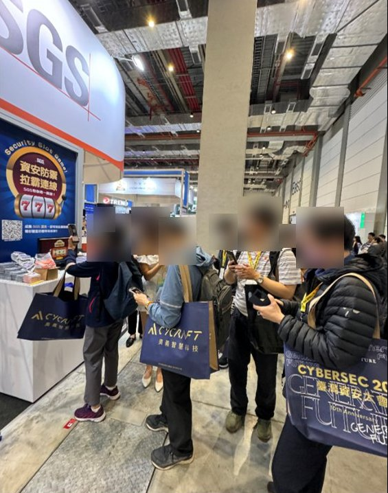
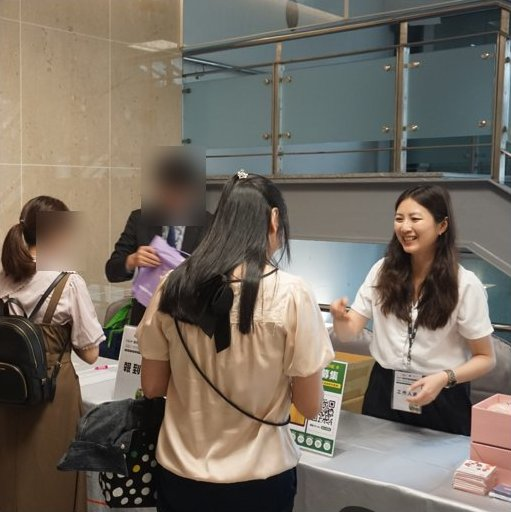
每場活動依現場人流挑選互動形式，掃碼加好友就能參加。2024/03 起有紀錄的 15 場活動，共新增至少 9,000 位 LINE 好友；單場最多的是 2025 臺灣資安大會，新增 2,407 位。
電子報 41.5%、LINE 11.2%、FB 3.6%；電子報是最大的單一報名來源，比業務邀請（20.6%）多一倍。
公司的數位通路受總部規範，我想在這個框架下，找到適合檢驗驗證產業的新做法，於是嘗試當時正在興起的 Podcast。節目主題由各產品線決定，很多是我不熟悉的專業領域。
從頻道建置開始，針對每一集的主題先消化專業內容，再企劃題綱、寫腳本，並擔任主持、錄製與推廣；題目從 ISO 驗證、ESG 到 AI 治理。
節目《經「驗」，談什麼？》上架 12 集，累積下載 16,423 次、不重複下載 9,357 次。
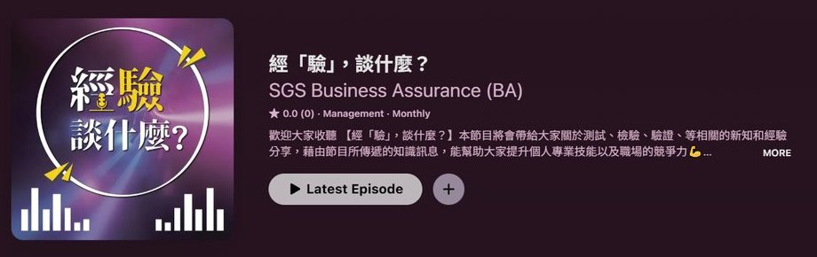
這不是完美的作品，主持和節奏都還有很多可以進步的地方。但這是一次從零開始的嘗試，讓我學會快速消化陌生的專業主題，再轉成一般人聽得懂的內容。
簡報製作耗時；社群配圖要排隊等設計資源，常常 3 天到 1 週。
以公司簡報模板為基底建立 AI 簡報生成流程；另外建立 AI 貼文與配圖流程。
簡報從約 2 天縮短到約半天；配圖縮短到 1 天內完成。
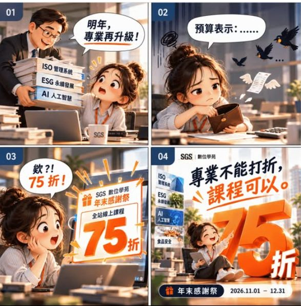
這些社群素材都用 AI 配圖流程製作。
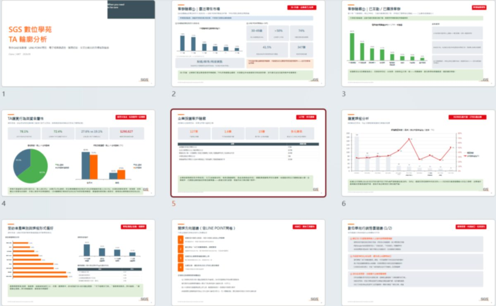
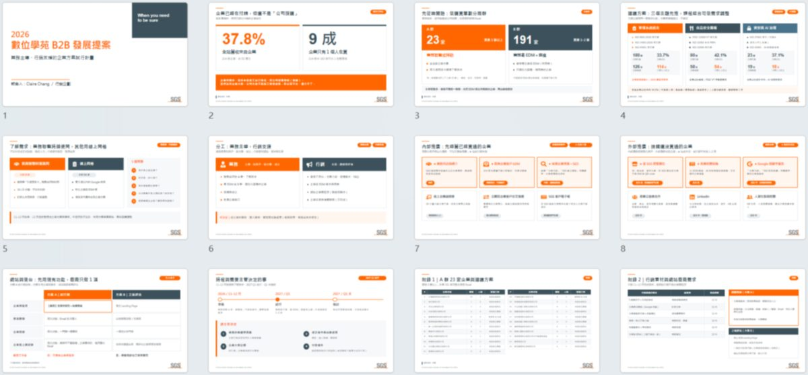
一人同時負責兩條產品線：B2B 的散熱風扇，以及面對消費者的居家換氣扇、吊扇。兩個市場的溝通對象和通路完全不同。
規劃 B2B 與 B2C 官網及子網站（含 2 個國家、2 種語系）；規劃 B2C 商品頁內容與素材，提供經銷商在 momo、PChome、Yahoo 購物等通路上架；再搭配團購、預購檔期與 FB 廣告推廣。
新風機上市預購累積 58 位訂購者、75 台；換氣扇團購售出 113 台；3 個粉絲團合計 80,000 人；協助產品獲得台灣精品獎、iF 設計獎。
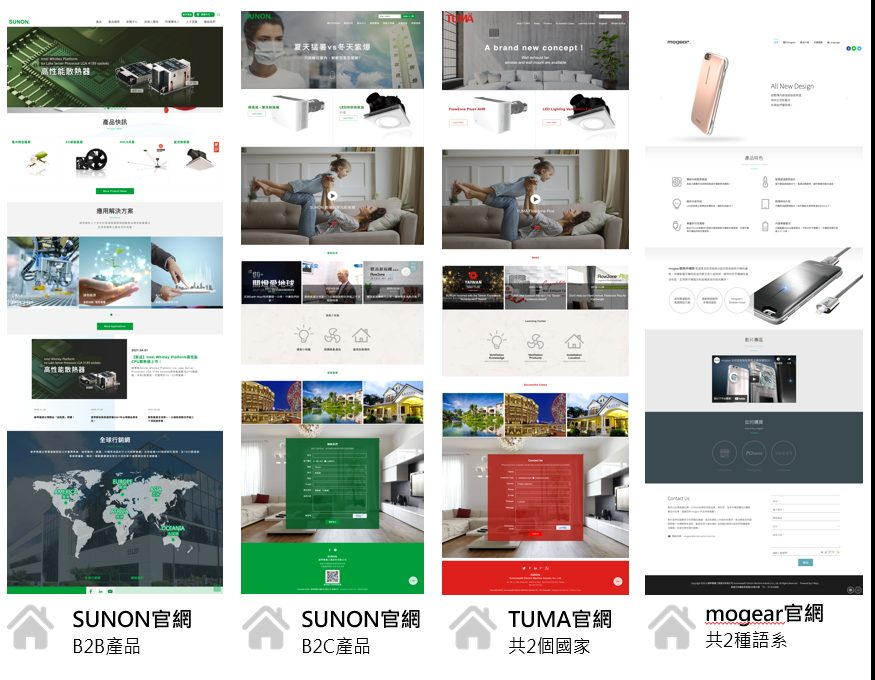
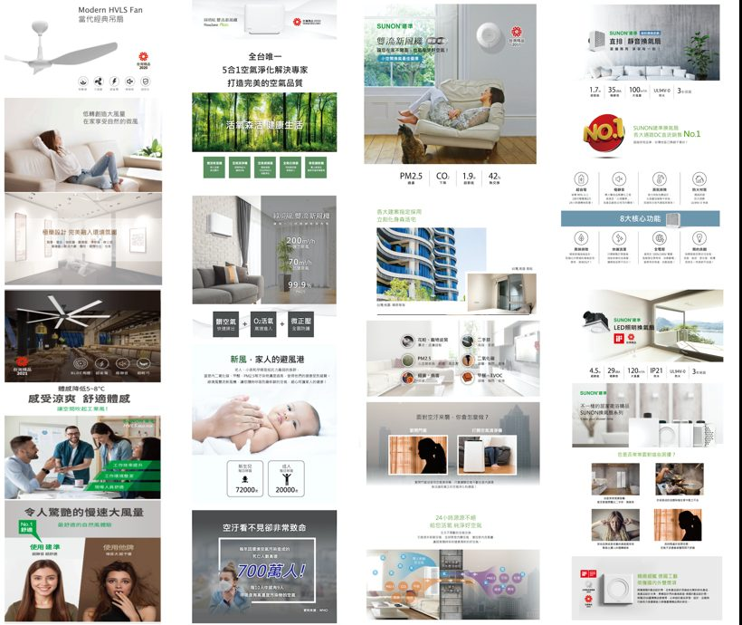
為台灣市場還很陌生的新產品「雙流新風機」規劃上市預購活動。目標族群是 31–40 歲、家中有小孩的家庭。
七年後在 SGS 推 ISO 14001 轉版課程，也看到同樣的現象：49% 訂單集中在早鳥截止前 3 週。觀察買氣節奏、再調整活動設計，是我一直保留的習慣。
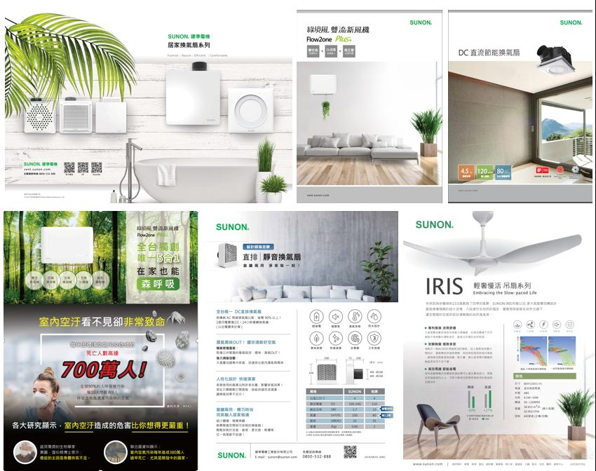
公關方面，負責商業週刊、遠見等媒體專題採訪的訪綱溝通與行程安排，以及企業參訪接待與活動司儀。
報表只是起點。這裡放兩個分析，都是先從數據看出問題或機會，再轉成具體的下一步。
2026/09 – 2026/11｜資料整合、分析與提案報告
數位學苑營收開始成長後，要決定該開什麼課、往哪個客群擴大。這些判斷需要先知道「到底是誰在買」。
整合網站會員與購買紀錄、GA 訪客數據，再加上 LINE POINT 問卷與電子報偏好調查，交叉比對出客群輪廓，提出開課方向建議；再進一步提出依購買數分群、「業務主導、行銷支援」的企業方案。
發現全站約 37.8% 營收來自企業，但 9 成企業只有 1 個人在買：企業客戶已經在，只是還沒被當成企業來經營。B2B 發展提案已由主管往上呈報，目前進行中。
2025 年度｜年度結案分析、需求整理與建議、LINE 自動回覆規劃
每年底我會替電子報、FB、LINE、Podcast 做結案分析。除了貼文與開信成效，社群私訊其實藏著學員最直接的需求，但平常回完就結束，沒有被整理。
把一整年的私訊逐筆分類：問的是哪門課、公開班或企業包班、哪個地區，再從中整理出三種需求：常有人問但還沒開的課、常滿班報不到名的課、希望開假日班的課。
把三份需求清單整理給管理學院，作為開新課、加開班次、增設假日班或做成數位學苑線上課程的參考；常被重複問的問題改用 LINE 自動回覆，減少人工重複回覆。
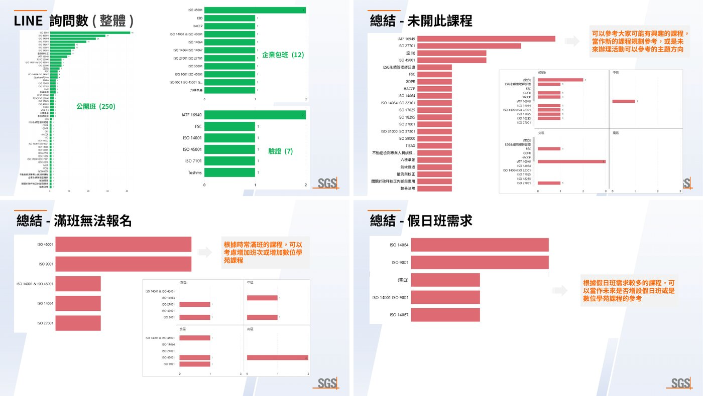
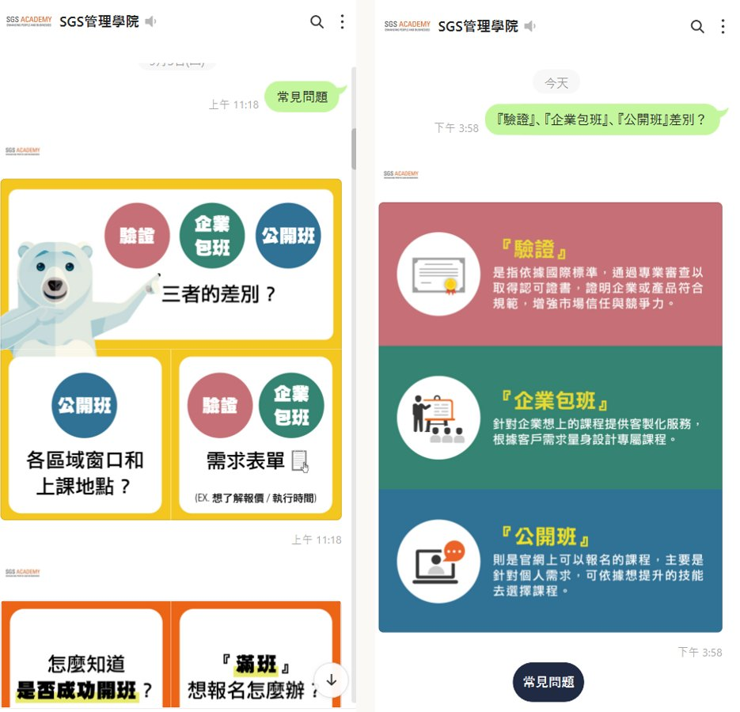
職涯前 6 年，我從代理商的廣告操作手開始，到遊戲公司自操廣告，再到教育訓練公司負責和媒體代理商合作。角色從自己操作，轉為和代理商合作。
XX 銀行手機廣告的平均點擊成本比電腦裝置低 6.6 元、點擊數是 3.7 倍；新遊戲上線一週帶進約 40,000 平台註冊；FB 名單成本（CPL）從 555 元降到 192 元、Yahoo 從 1,398 元降到 1,050 元。
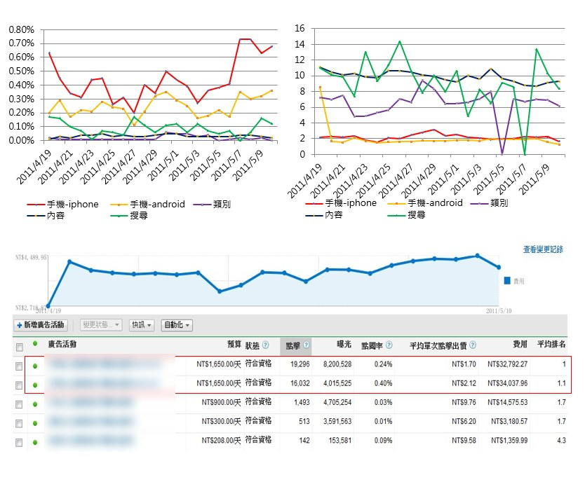
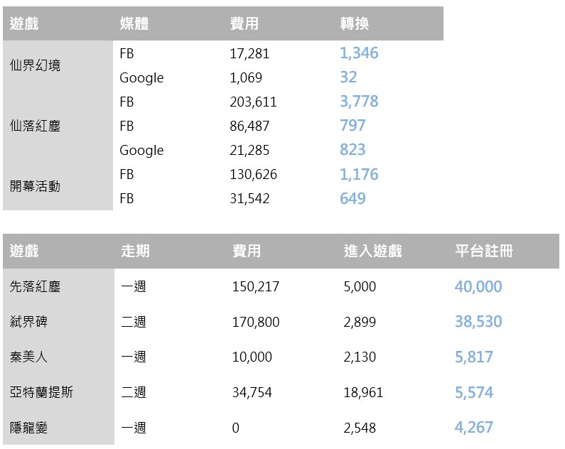
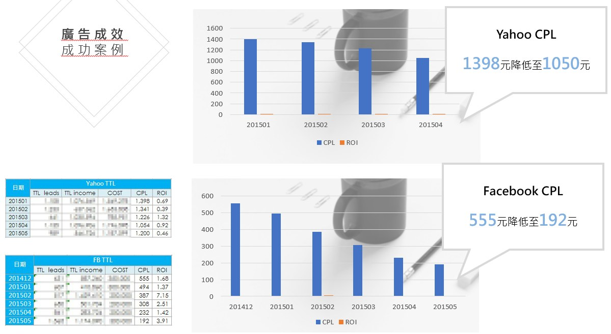
平台規則一直在變，現在我不再親自操作廣告帳戶。但因為自己做過，和代理商、SEO/GEO 廠商合作時，我能站在品牌方提出方向、看懂成效數據並快速配合調整，而不是被帶著走。